收词
把大家真正在搜的词收集起来：搜索框里搜的、客户自己说出来的。
把一线的获客与成交经验，变成团队能复用的方法；
用官方身份建立信任，再把服务、活动和关系沉淀进 RG App；
最后用一个销售工作台，把这些工具和代理数据集中起来。
我们每周追踪不同渠道的客户来源数据，从新加代理到最终成交的全链路表现，快速识别高质量渠道、优化投入策略，让获客更高效。
本周抖音转化率达 5.0%，领先其他渠道 1.0 个百分点。建议持续加大抖音和小红书的投入，同时优化视频号与 Telegram 的内容策略与触达方式。
把老销售的经验沉淀成可复用的数据表。记录每个关键词在哪个平台更有效、带来多少线索、多少成交、需要加多少人才能成交 1 单，并且每周重排一次。
把大家真正在搜的词收集起来：搜索框里搜的、客户自己说出来的。
同一个词在抖音和视频号效果差很多，所以词和平台一起记。
这个词搜来的人，最后有没有开户入金，结果回填到词上。
效率重排一次，好词往上走，长期不出单的词沉到底部淘汰。
新人不用再去问「我该搜什么」，也不用自己试错三个月——打开词库，从排在最前面的词开始。
拆解真实成交聊天记录，让新人看懂客户的判断、顾虑、推进和成交逻辑，快速掌握可复制的方法。
新人要意识到：第一句往往不是单纯提问，而是在测试你的专业性。
让客户自己去核验，先建立安全感，再谈产品。
愿意说出自己的业务类型，代表对你有了初步信任。
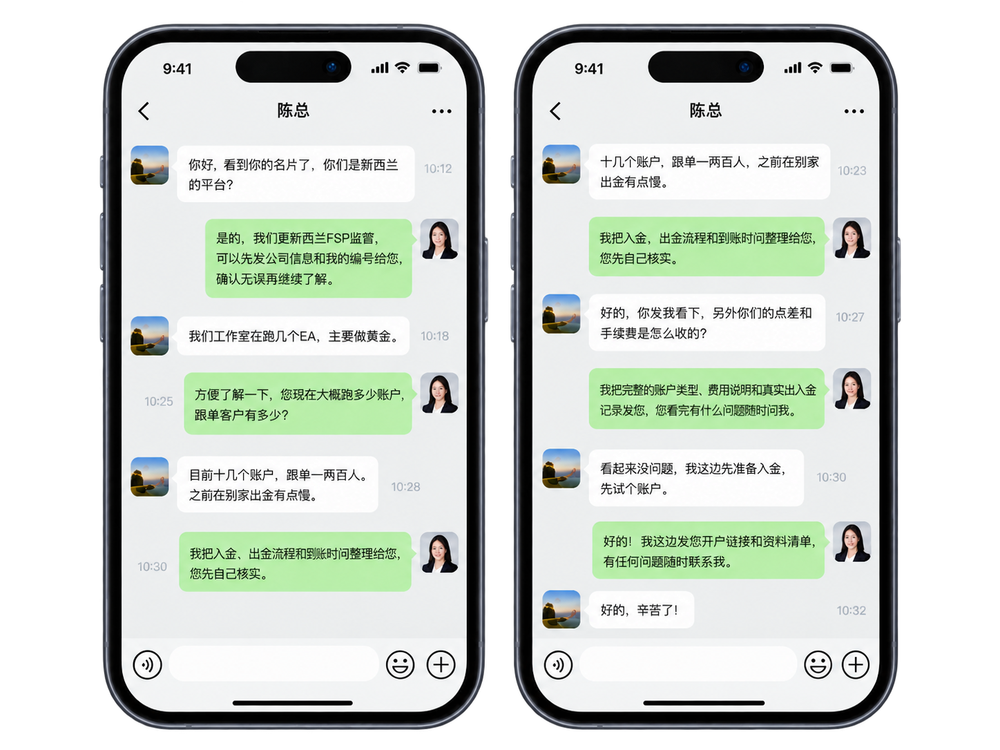
这是成交的关键顾虑点，一旦出现就要重点应对。
提供具体的流程说明、到账时间、真实记录，用事实消除顾虑。
左边保留语音通话录音原文，右边只做最关键的三件事：拆客户意思、拆我方回应、拆下一步动作。让新人第一眼就能学会。
我先想看看，你们到底稳不稳。
可以，您先别急着开。先核验一下公司信息、监管和出入金规则。
我主要担心的是出金慢，之前别家有点拖。
明白，那我先不讲开户链接，先把出入金流程和到账时效跟您说清楚。
如果流程清楚、到账稳定，我可以先试一笔。
示意对话为虚构。真实录音入库前需脱敏，并按合规要求审核使用范围。
不是单纯问平台，而是在试探靠不靠谱。
先给核验入口，比直接推产品更容易建立信任。
不要急着成交，等客户继续暴露真实顾虑。
把判断权交还给客户，而不是替客户下结论。
客户越能自己验证，防备感越低。
继续问客户最担心什么，不急着介绍开户链接。
真正顾虑已经出现：不是费率，而是出金。
这是整通电话的关键转折点，要把重点转向解决顾虑。
直接讲出入金流程、到账时效、可验证材料。
不再推销，而是正面回应客户担心的问题。
先解决顾虑，再谈开户，客户才会继续听。
把流程讲具体，把时效讲清楚。
客户已经从怀疑，进入“愿意试一笔”的阶段。
这时重点不再是解释，而是安排试单和后续跟进。
发资料、约时间、推进下一次确认。
客户真正担心的是出金安全和到账效率。我方正确的做法，不是急着推开户，而是先建立信任，再用可验证的信息解决顾虑。
官网提供统一核验入口：客户输入客户经理编号，就能确认身份、在职状态和官方联系方式。人员变动时，客户也知道下一步该联系谁。
输入对方提供的客户经理编号，结果以本页为准
给每位客户经理一张专属电子名片：联系方式藏进链接，公司资质摆在名片上。
每位客户经理按编号生成专属链接和二维码；人员离职后由公司收回，改指向官方服务。见 06
主页、私信、评论区只放二维码或链接，平台识别不到微信号和手机号，客户扫码后才看得到。
ASIC 注册、新西兰公司注册、FSPR 编号直接展示，客户点开就能去官网核实。
rockglobal.co.nz/card/客户经理编号
加V：meilong_88 · 电话 020…被识别为引流，限流甚至封号🔗 我的电子名片（主页链接）平台看不到联系方式，正常展示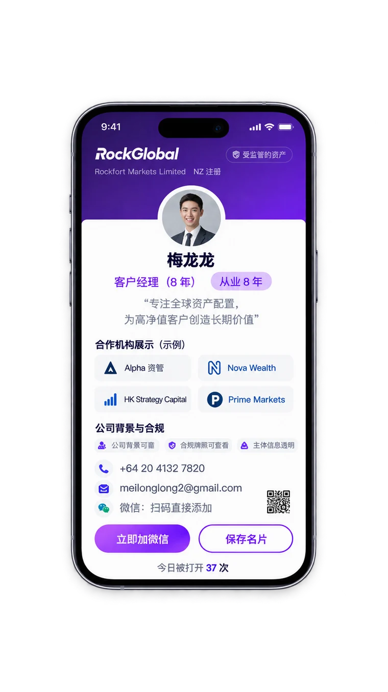
App 首先解决“查不到、找不到、办不了”的体验：
账户、交易、入金出金、通知和服务入口放在同一个
可信的官方应用里。
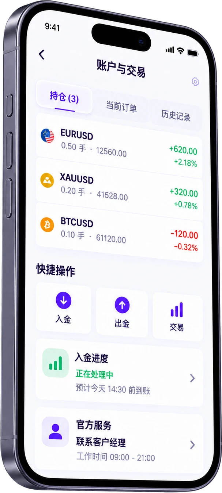
账户概览、持仓、订单、
基础买入卖出与历史记录。
清晰的流程、到账状态
和可追踪记录。
显示当前进度、缺少什么、
下一步怎么完成。
客户经理、客服、常见问题
和重要说明集中在一处。
客户在 App 中始终看到自己的官方对接人、服务状态和联系入口。
人员变动时，系统完成交接，客户也会收到清晰通知，
服务记录持续保留。
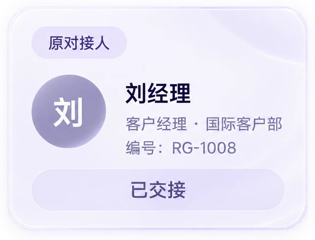
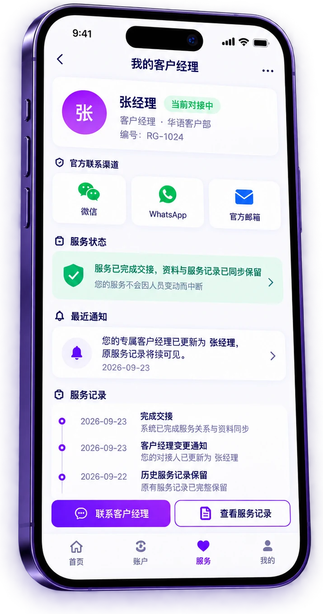
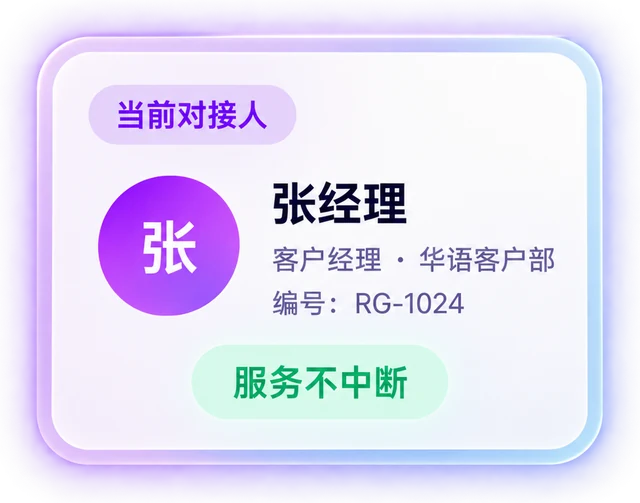
我们通过官方活动、直播答疑、产品教育和用户讨论，
让经验被分享、问题被解决、好的内容被沉淀，
形成持续参与的社区生态，提升用户的留存与活跃。
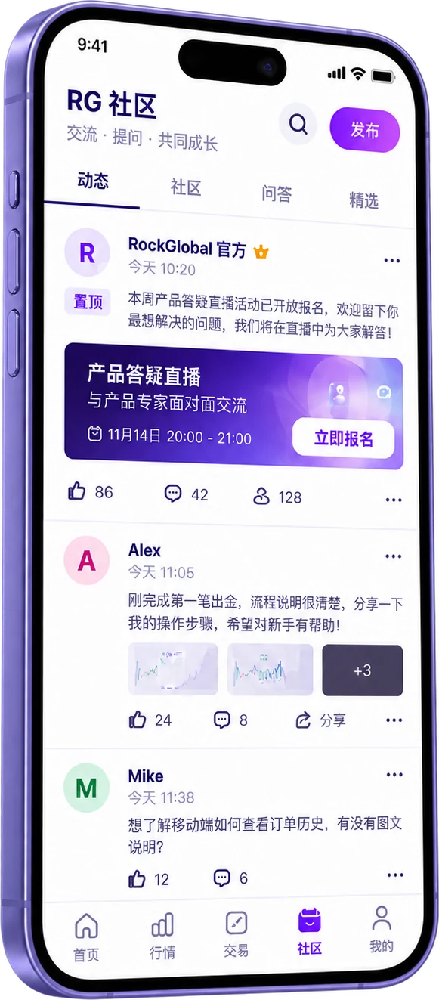
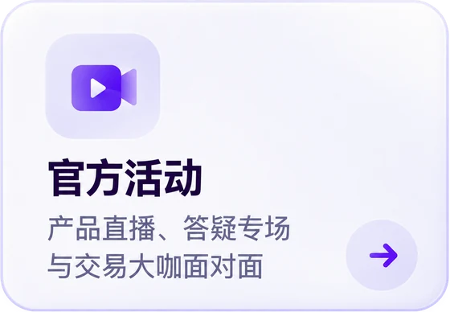
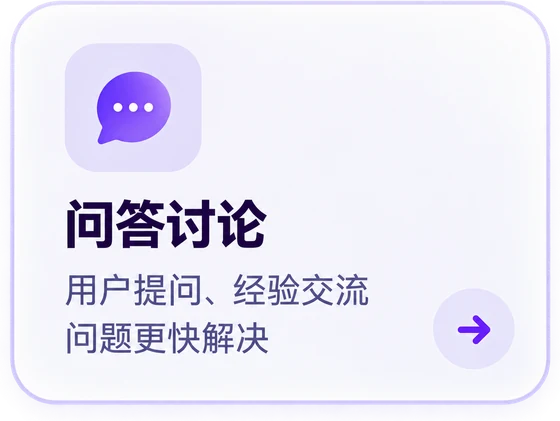
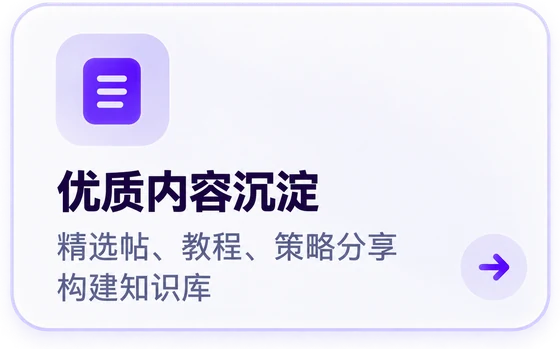
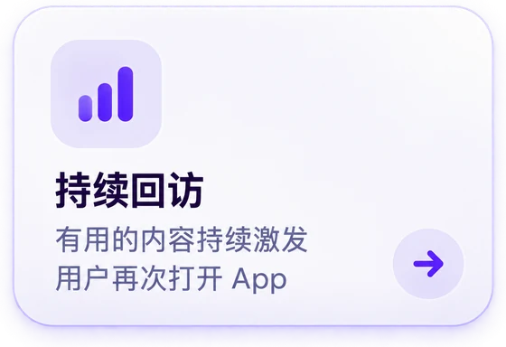
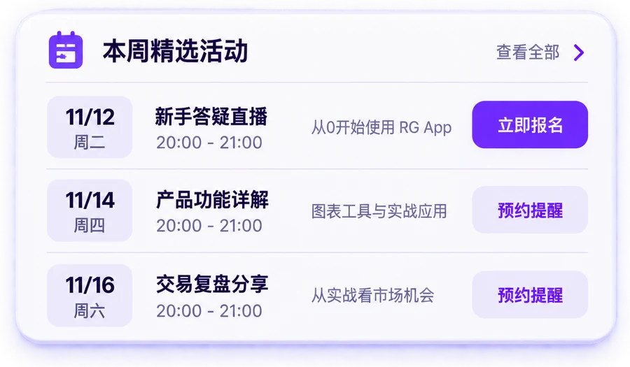
渠道、关键词、案例、话术、名片，再加上代理后台里的客户、入金和佣金数据，集中在一个 App 里。打开就知道今天该跟谁、卡在哪一步、用什么去推进。
万象把公司资料整理成知识库：开户、出入金、点差返佣、代理后台、内部流程、新人入门……员工和代理用 Lark 名字、邮箱或微信号登录就能问，每个回答都可追溯来源。
平台活动、政策、账户类型、开户文件，随时问，不用每件事都找客户经理。
在代理能看的基础上，加上公司制度、销售话术、内部流程和新人资料。
团队管理、业绩与级别相关资料；组员常问的问题，不用一个个回答。
管理后台看使用情况和提问记录，知道哪些资料和培训该补；审批权限申请。
接入销售工作台和公司 CRM：负责人一句话，本周各组组员的新客户、开户、入金和跟进情况直接做成表，统计汇总不再占用行政、人力。
不会。工作台由我独立开发，界面和功能按销售的实际工作原生设计，写日报就像做几道选择题。
不会，反而更轻松。过去设置要上网页、看客户情况要开电脑、找材料去 Lark、加代理去后台、找活动去前端，东市买骏马、西市买鞍鞯。现在一个工作台 App 全部搞定。
今日待办按客户状态自动排好：卡在实名的发实名指引，约了实测的发点差实测，十几天没联系的提醒跟进。
规则政策随手问万象，回答附来源；身份让客户扫电子名片、上官网自己核验，监管编号都能查。
打开工作台，每个组员的情况一目了然：
该帮谁、帮哪一步，一眼就知道。
渠道、关键词、成交案例、顾虑话术都在工作台里，规则政策问万象。团队长只需要处理真正的难点。
日报是选择题，客户数据从代理后台自动同步，团队汇总直接在工作台看，不用再逐个收截图、对 Excel。
不会。运维负责后端的 RockGlobal 券商平台，我做的是服务销售前端的工具，解决销售工作中的问题。而且我就在销售公司，沟通方便。
客户关系留在平台：名片按编号收回，客户在 App 里看到新对接人，服务记录保留。见 09
全公司的随身顾问：代理没入职也能查活动、政策、账户和开户文件；员工再多一层制度、话术和操作指引；团队长不用被同样的问题反复问。每个回答附来源，按角色分级。
接入销售工作台和公司 CRM。负责人一句话：“把本周各组组员的新客户、开户、入金和跟进情况做成表”，万象直接调数据出表，行政、人力的统计汇总都省了。